Confianza
Compromiso con la seguridad y la calidad.

Petróleo y gas | Operaciones desde 2006
Perforamos, desarrollamos y construimos futuro con equipos de taladros petroleros, well service, wireline, procura y soporte operativo especializado.
Compromiso con la seguridad y la calidad.
Equipos de última generación y procesos eficientes.
Impulsamos el desarrollo de la industria petrolera.
Soluciones integrales sin fronteras.
Sobre nosotros
Desarrollos 2807 C.A. es una empresa de servicios en el sector petrolero que inició sus operaciones en el año 2006. Desde entonces se ha consolidado bajo principios de confianza, innovación y compromiso, con una visión enfocada en el progreso de la industria del petróleo y el gas.
La empresa ofrece servicios confiables, ajustados a los estándares de calidad exigidos por sus clientes, contribuyendo al desarrollo sostenible del sector energético y actuando bajo lineamientos de profesionalismo, seguridad y responsabilidad.
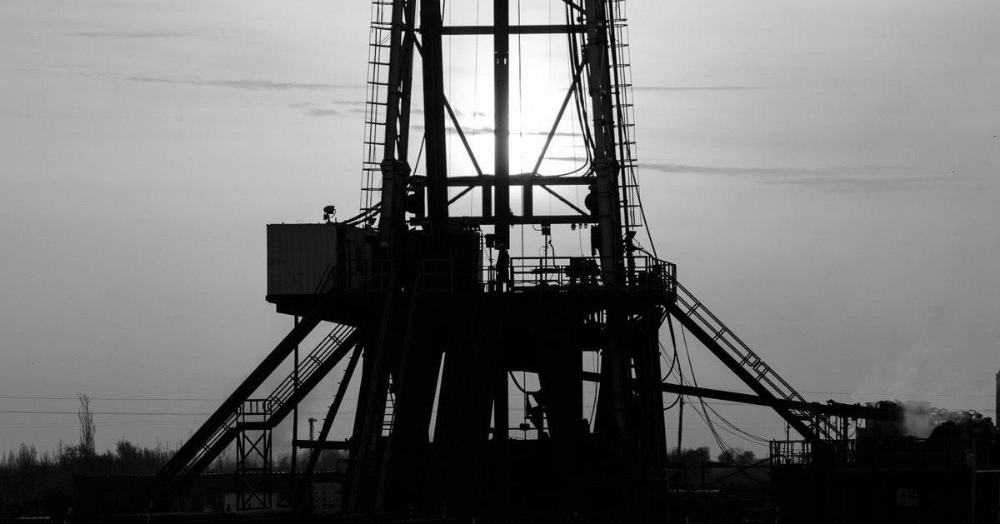
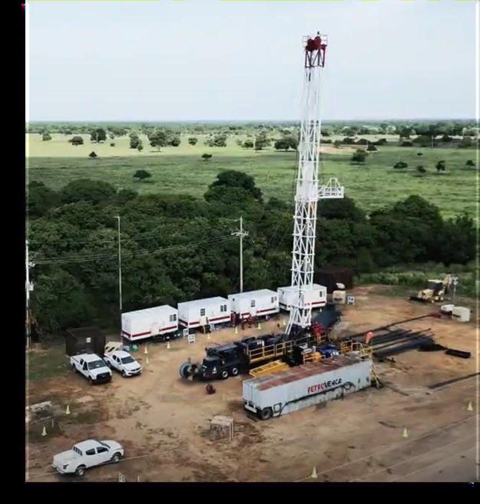
Nuestra visión
Distinguirse por la excelencia en las operaciones, el desarrollo continuo y la experiencia en la prestación de servicios petroleros, impulsados por un equipo humano altamente capacitado y enfocado en cumplimiento técnico, seguridad y normativa legal.
Nuestra misión
Asegurar el cumplimiento de los requerimientos del cliente a nivel nacional e internacional, manteniendo compromiso con la seguridad, la innovación, la responsabilidad y la protección del medio ambiente.
Nuestros servicios
Cubrimos toda la operacion en campo con dos grandes lineas. En la linea petrolera ofrecemos well service y workover, well construction con taladros de perforacion, wireline de guaya fina y electrica, coiled tubing, procura y logistica pesada. Y en hospedaje y oficinas moviles brindamos dormitorios, comedores y catering, lavanderia y modulos de oficina en contenedor. Elija un tipo para ver sus servicios.
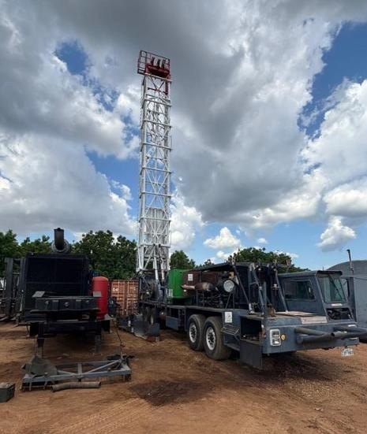
Equipos cabilleros NOV y Taylor de 550 HP, workover Serviking 775 HP y soporte para intervencion y mantenimiento de pozos.
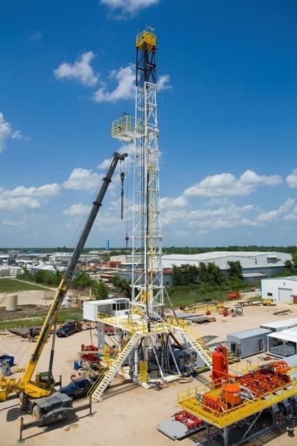
Capacidad para operaciones de perforacion con infraestructura tecnica y sistemas de control para proyectos exigentes.

Evaluacion de pozos, diagnostico de problemas, perfiles de produccion e inyeccion, Gas Lift, CBL, VDL, Caliper, Gamma Ray, CCL, PLT e ILT.
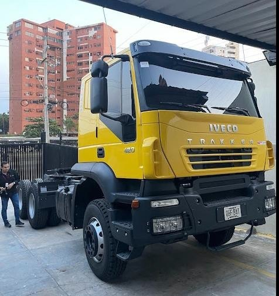
Suministro, transporte y apoyo logistico para mantener equipos, herramientas y operaciones en movimiento.
Flota destacada
Equipos diseñados para intervención, mantenimiento, perforación, evaluación y soporte operativo en pozos petroleros.
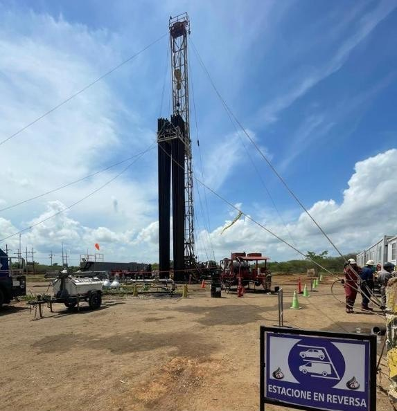
Unidad de servicio de pozo utilizada para trabajos de intervención, mantenimiento y soporte de producción. Su potencia permite movilizar herramientas, tubería y equipos auxiliares durante operaciones controladas en campo.
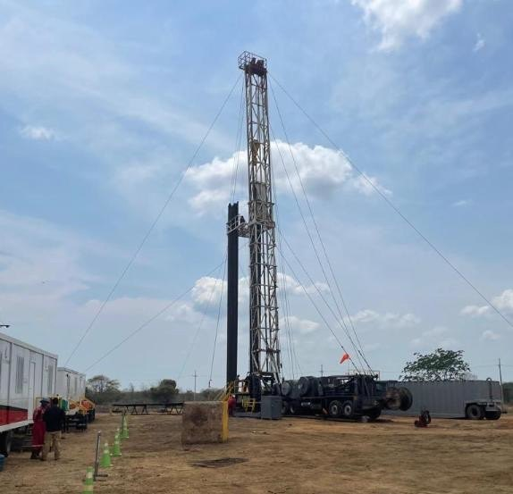
Equipo orientado a maniobras de reacondicionamiento y servicios de pozo. Apoya operaciones donde se requiere levantar, bajar o manipular componentes de manera segura y eficiente.
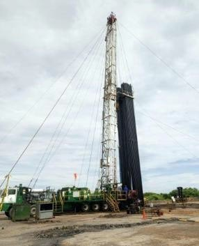
Cabillero para trabajos de servicio y mantenimiento de pozos, diseñado para operar con capacidad mecánica constante y facilitar tareas de intervención en locaciones petroleras.
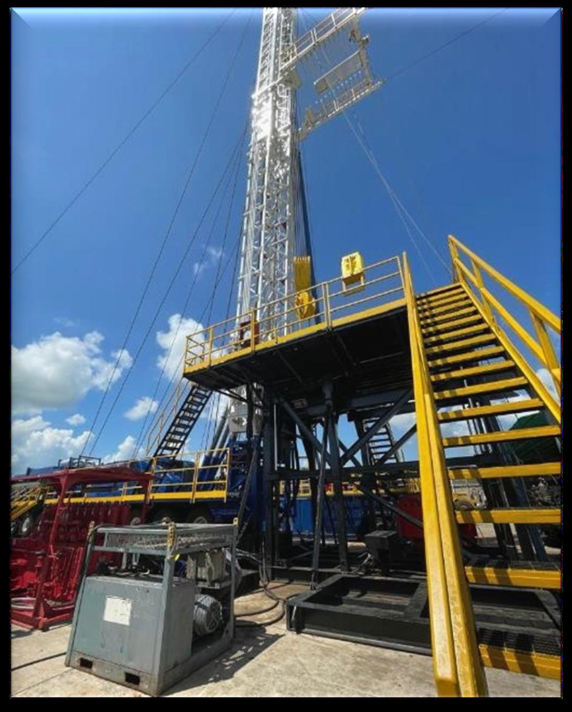
Equipo de workover para reacondicionamiento de pozos, cambios de completación, recuperación de producción y operaciones que requieren mayor capacidad de izaje y control operativo.
Taladro de alta capacidad para construcción y perforación de pozos. Integra sistemas de potencia, mesa rotaria, bombas de lodo, generación eléctrica y control de sólidos para operaciones exigentes.
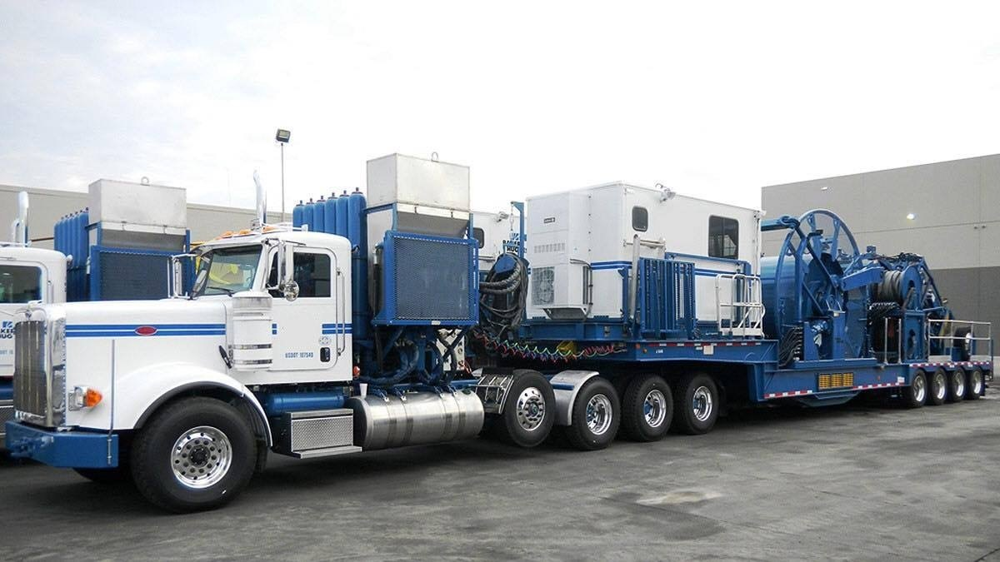
Unidad de tubería continua para limpieza, estimulación, circulación, intervención y trabajos de fondo sin necesidad de retirar completamente la completación del pozo.
Especificaciones técnicas
Equipo de perforación con configuración orientada a movilidad, capacidad de carga y control operacional.
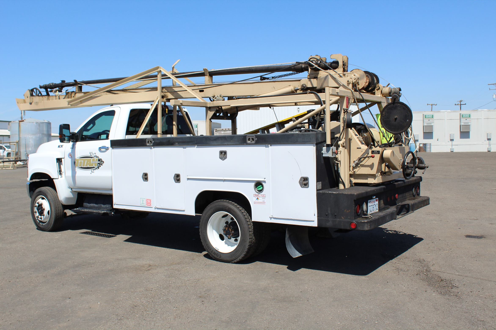
Guaya fina
Herramientas como barra de peso, pescante GS, localizador de guaya, pescante arpón, tijera tubular y mecánica, llaves tipo B, diablo de corte, toma muestra, cepillo, rope socket, blind box, bloque de impresión, kick over tools, martillos y bajantes.
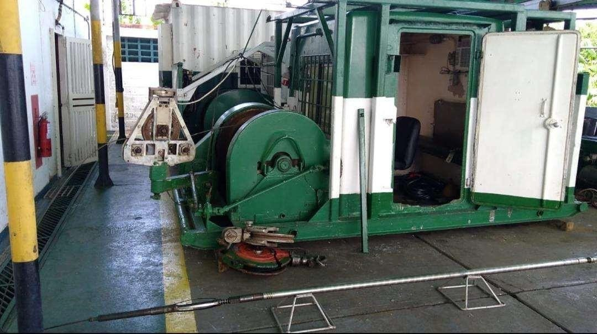
Guaya eléctrica
Departamento con ingenieros, técnicos y operadores calificados, personal certificado para presión, cañoneo, coordinación y seguridad, con experiencia especializada en servicios de campo.
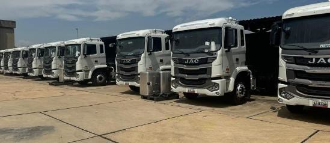
Equipos de logística pesada
Flota y apoyo logístico para traslado, suministro y operaciones multipropósito en campo, conectando procura, equipos, herramientas y personal especializado.
Cotización y llamadas
Envíe el servicio requerido, ubicación, fecha estimada y prioridad. El sitio está preparado para generar llamadas directas y solicitudes de cotización desde móvil o escritorio.
414-607-8952